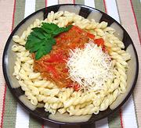

|
Tuna & Bell Pepper Pasta SauceItaly - "Sedoni" al Tonno e Peperone | ||||
| For 12 oz Effort: Sched: DoAhead: |
Pasta ** 50 min (Note-4) |
A wonderfully tasty medium sauce that's sure to please for summer dinner or winter lunch. Shown here with Gamelli pasta, it will work fine with any medium adhesion pasta. | |||
|
|
12 8 6 2 1 tt tt 12 --- ar ar |
oz oz oz T c oz --- |
Bell Pepper red (3) Onion can Tuna in Water (1) Olive Oil ExtV Tomato Sauce (4) Salt Pepper Pasta (12 to 16oz) --- Garnish Pecorino Cheese Parsley, flat |
Prep - (25 min)
|